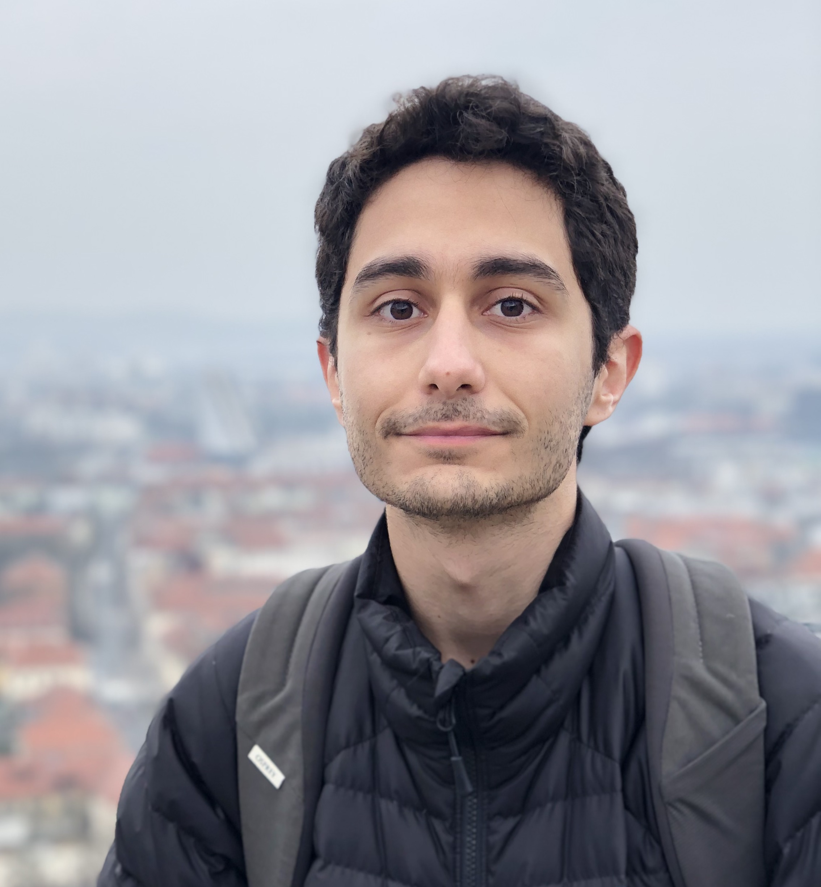

Hi! I'm Ali Garjani, a graduate of the Computational Science and Engineering master's program at EPFL with a B.S. in Computer Engineering. I've participated in research projects at VILAB, supervised by Amir Zamir, and IVRL, supervised by Sabine Süsstrunk. Moreover, I worked with Deniz Gündüz lab as a research intern during my bachelor's. I'm interested in looking into computer vision problems through a more theoratical approach.
